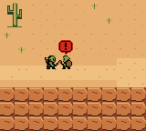

Mace Bonk
Wood-and-metal mace impact / BONK
Eight original Warcraft-inspired pulse/noise gestures. These previews capture the built ROM’s actual emulator APU. They are not copied Blizzard samples.
Click Play to listen. Clips are normalized individually for preview; the game keeps its native volume balance.
Wood-and-metal mace impact / BONK
Lightning charge, crack and electric tail
Flame ignition, fiery rush and low impact
Short bubbling toxic hiss
Quick piercing sting with a dry click
Two small metal coin chimes
Quiet tactile menu click
Leather flap and soft strap rustle
This separate capture follows ordinary new-game buttons, with no diagnostic call injection.

Isolated clips use a labeled diagnostic PlaySFX invocation in a temporary ROM. All eight effects terminate in under 0.7 seconds and restore the background music. Physical console audio remains untested.